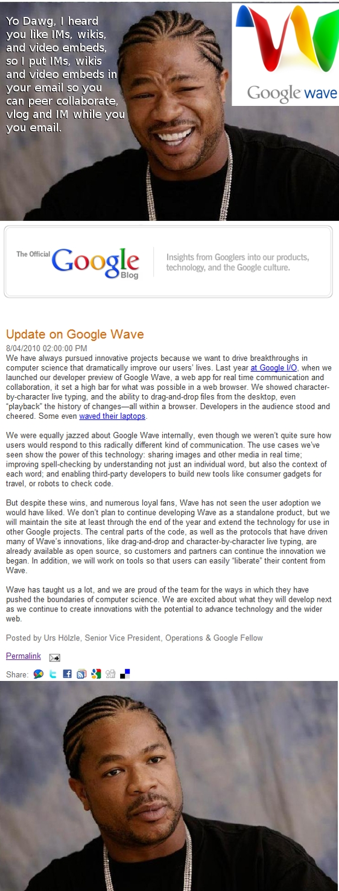

Elsewhere at my workaday life, I went on and on about the digital humanities relates to how Google canned Wave. Here’s the tl;dr:


Either very funny or very dumb.
This entry was posted on Friday, September 10th, 2010 at 7:03 PM and is filed under Buckeye. You can follow any responses to this entry through the RSS 2.0 feed. Both comments and pings are currently closed.